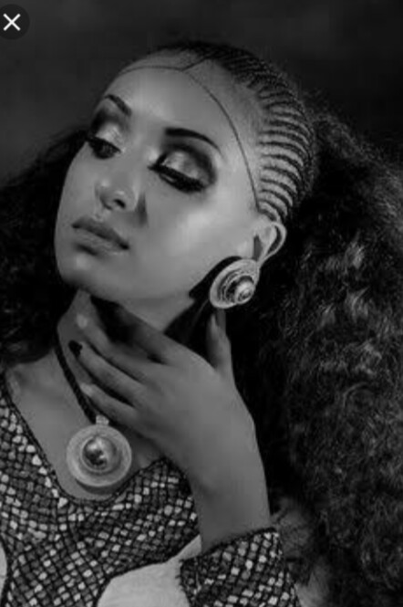
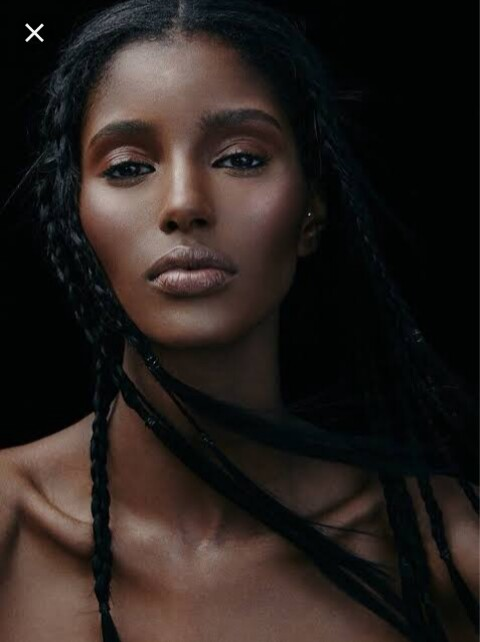
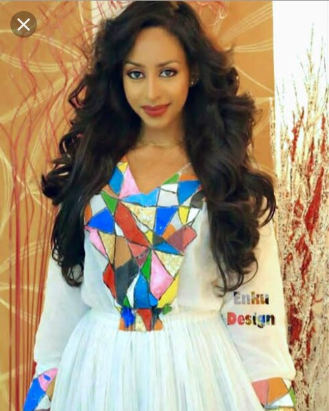

The finishing touches: mascara and eyebrow powder. Swipe Volum’ Express The Colossal Big Shot Mascara on your top and bottom eyelashes to open eyes and make them look brighter, instantly. Then fill in your eyebrows with Eyestudio Brow Drama Pomade Crayon for shape and definition, and you’re all set for class.
We've got sunshine in our makeup bags and we're excited to spill which Maybelline products are inside! Get ready to get inspired by energetic colors like yellow and pink- the brighter, the better!

A flawless foundation that does more for your skin. Experience 12 hours of skin-adoring moisture for a full coverage, luminous finish when you use Dream Satin Liquid Foundation Makeup.
It's all in the eyes. And the possibilities are endless. Demure daytime looks. Deep drama night moves. Subtle lines and definition, smokey vibes, custom brow looks, classic tones or a shot of color. Eyeshadow and eyeshadow primers, eyeliner, brows, and mascara collections designed to transform your look in the blink of an eye.

let’s play up all the ravishing red lipsticks in our arsenal with Maybelline Color Sensational. Whichever red you choose with this makeup guide, you’re sure to turn up the heat this winter.
Turn up the heat this season by turning back the clock. Throw on a backpack, unleash that free spirit and go to town with your forever fave Baby Lips in all their glowing glory.Be it Valentine’s, Galentine’s, or alone time that you’re toasting to on February 14th, we have the perfect (makeup) looks of love for you, from pink smokey eyes to ombre lips and more!